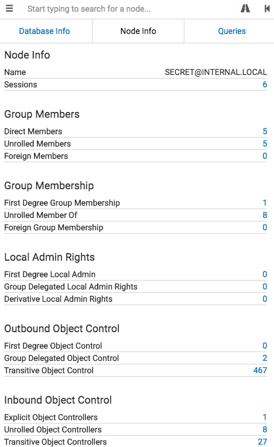

Clicking on a group node will populate the Node Info tab with information about that group:

Node Info
-Name: The display name of the group.
-Sessions: These are all the computers the ingestor identified the effective users of the group as logged onto during collection.
Group Members
-Direct Members: These are the users and groups that are explicitly added to this group. This is the information you would see when typing net group groupname /domain
-Unrolled Members: These are all of the effective group memberships for the group. This is the equivalent of running Get-NetGroup -GroupName groupame -Recurse
-Foreign Members: These are users belonging to this group which themselves belong to a foreign domain
Group Membership
-First Degree Group Memberships: These are the groups that the group is explicitly a member of.
-Unrolled Group Memberships: These are all of the group's effective group memberships.
-Foreign Group Memberships: These are all of the foreign groups that the group belongs to.
Local Admin Rights
-First Degree Local Admin: These are the computers where the group itself is added explicitly as a local administrator on a system.
-Group Delegated Local Admin Rights: These are the computers that the user group administrator privileges to based on delegated group rights.
-Derivative Local Admin Rights: These are the computers the group can gain administrator rights to by impersonating a user currently using a computer the user has administrator privileges to, regardless of how deep this chaining goes.
Outbound Object Control
-First Degree Object Control: These are the other objects that this group has direct control over.
-Group Delegated Object Control: These are the objects that this group has control over via security group delegation.
-Transitive Object Control: These are the objects that this group has an ACL-only attack path to.
Inbound Object Control
-Explicit Object Controllers: The other principals which have first degree control over this group.
-Unrolled Object Controllers: By unrolling the first degree groups with control of this group, we see all the effective principals which control over this object via security group delegation
-Transitive Object Controllers: These are the other principals in the environment that have an ACL-only attack path to this group object.